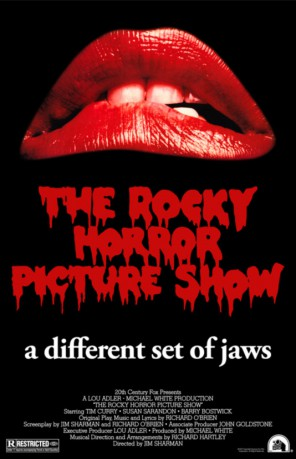

#1332 Die Rocky Horror Picture Show
Alternativ: The Rocky Horror Picture Show
 
 IMDB-Wertung: 7.4 / 10
IMDB-Wertung: 7.4 / 10  Metascore: 58
Metascore: 58 
Brad und Janet haben sich gerade verlobt und wollen ihren früheren Collegeprofessor besuchen, als sie wegen eines platten Reifens während eines Sturms Zuflucht in einem abgelegenen Schloss suchen müssen. Dort will der Transvestit Frank-N-Furter beim jährlichen Treffen für Besucher vom Planeten Transsylvanien gerade seine neueste Kreation, den blonden, muskelbepackten Rocky Horror, vorstellen. Im Laufe einer aufregenden Nacht verführt Frank sowohl Janet als auch Brad. Als Janet ihre neu gewonnene Lust an Sex auch mit Rocky teilt, hört der Spaß für Frank jedoch auf...
Jahr: 1975
Dauer: 100 Minuten
FSK: 12
Land: England Studio: 20th Century Fox Home EntertainmentTonspuren:
Untertitel: Deutsch,
Auflösung: 720p (1184x720) Größe: 3717 MB
Genre: Komödie, Musical
Regisseur: Jim Sharman
Drehbuch: Richard O'Brien, Jim Sharman, Richard O'Brien
Soundtrack:
Darsteller:
 Tim Curry als Dr. Frank-N-Furter - A Scientist
Tim Curry als Dr. Frank-N-Furter - A Scientist Susan Sarandon als Janet Weiss - A Heroine
Susan Sarandon als Janet Weiss - A Heroine Barry Bostwick als Brad Majors - A Hero
Barry Bostwick als Brad Majors - A Hero Richard O'Brien als Riff Raff - A Handyman
Richard O'Brien als Riff Raff - A Handyman- Patricia Quinn als Magenta - A Domestic
- Nell Campbell als Columbia - A Groupie
 Jonathan Adams als Dr. Everett V. Scott - A Rival Scientist
Jonathan Adams als Dr. Everett V. Scott - A Rival Scientist- Peter Hinwood als Rocky Horror - A Creation
 Meat Loaf als Eddie - Ex Delivery Boy
Meat Loaf als Eddie - Ex Delivery Boy Charles Gray als The Criminologist - An Expert
Charles Gray als The Criminologist - An Expert Christopher Biggins als The Transylvanians
Christopher Biggins als The Transylvanians Richard Nixon als Himself , archive sound, uncredited
Richard Nixon als Himself , archive sound, uncredited- Jeremy Newson als Ralph Hapschatt
- Hilary Farr als Betty Munroe
- Perry Bedden als The Transylvanians
- Gaye Brown als The Transylvanians
- Ishaq Bux als The Transylvanians
- Stephen Calcutt als The Transylvanians
- Hugh Cecil als The Transylvanians
- Imogen Claire als The Transylvanians
- Tony Cowan als The Transylvanians
- Sadie Corre als The Transylvanians
- Fran Fullenwider als The Transylvanians
- Lindsay Ingram als The Transylvanians
- Peggy Ledger als The Transylvanians
- Annabel Leventon als The Transylvanians
- Anthony Milner als The Transylvanians
- Pamela Obermeyer als The Transylvanians
- Tony Then als The Transylvanians
- Kimi Wong als The Transylvanians
- Henry Woolf als The Transylvanians
- Lewis Alexander als Floor Show Audience , uncredited
- Gina Barrie als Bridesmaid , uncredited
- Ernest Blythe als Floor Show Audience , uncredited
- Rufus Collins als The Transylvanians , uncredited
 Victor Harrington als Floor Show Audience , uncredited
Victor Harrington als Floor Show Audience , uncredited- Mark Johnson als Wedding Guest , uncredited
 Juba Kennerley als Floor Show Audience , uncredited
Juba Kennerley als Floor Show Audience , uncredited- Petra Leah als Bridesmaid , uncredited
- Frank Lester als Wedding Dad , uncredited
- Aileen Lewis als Floor Show Audience , uncredited
- John Marquand als Father , uncredited
- Koo Stark als Bridesmaid , uncredited
 Trevor White als Rocky Horror - A Creation , singing voice, uncredited
Trevor White als Rocky Horror - A Creation , singing voice, uncredited
Datei: X:\1975\Rocky Horror Picture Show, Die (1975, FSK12, 1184x720).mkv seit 23.06.2015
Festplatte: HD 1971-1979
 Es gibt insgesamt 27 Filme in der Gruppe '1975'
Es gibt insgesamt 27 Filme in der Gruppe '1975'